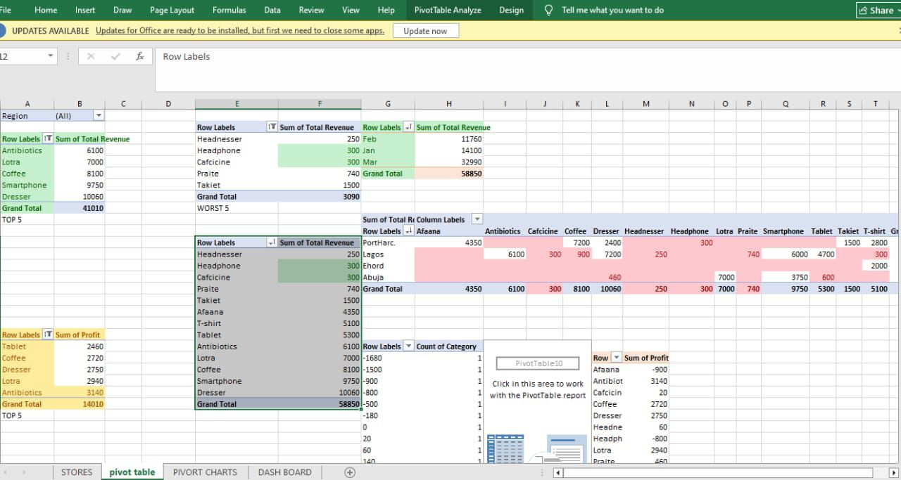
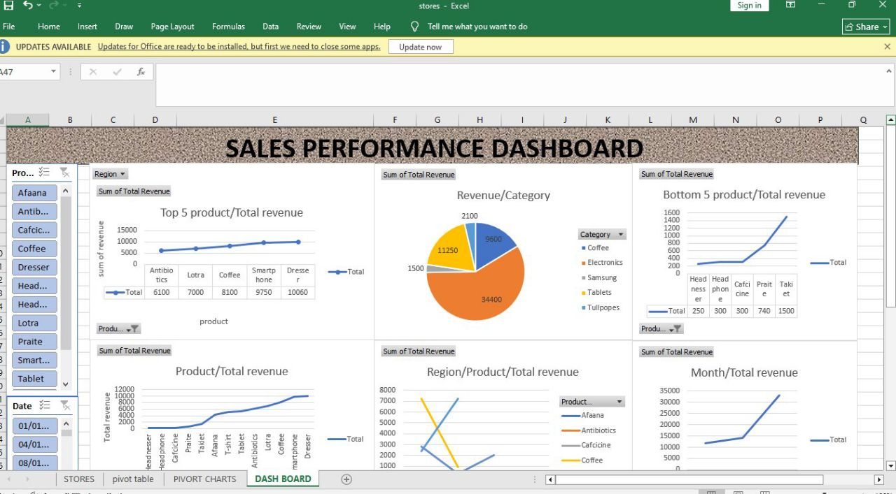

About Me
Aspiring Intern Data Analyst with 2 years of structured learning and practical training in data analysis using Microsoft Excel. Trained through bootcamps, Udemy courses, and self-directed learning. I have a strong foundation in data cleaning, analysis, and visualization, and am developing my expertise in data storytelling to clearly communicate insights. I am highly motivated to apply analytical skills in real-world business and research environments.
Currently growing my skills by taking more bootcamps and independent learning projects.
Currently growing my skills by taking more bootcamps and independent learning projects.
Key Skills & Technologies
Projects & Work Highlights

Excel Dashboard: Bike Store Income & Demographics
Designed interactive dashboards using Excel Pivot Tables, showcasing income trends, region distribution, homeowner data, and commute insights for a bike store dataset.

Revenue & Profit Trend Analysis
Visualized product revenue and profit trends over time with Excel Pivot Charts, demonstrating growth analysis, product comparison, and seasonal performance.

Sales Performance Dashboard
Built a comprehensive dashboard for sales data, including top/bottom product analysis, category revenue, region trends, and monthly performance using Excel.

Pivot Table Data Preparation
Cleaned and structured raw datasets for analysis, using Pivot Tables for summarization, validation, and profit breakdown by product and region.
.jpg)
Product Revenue & Profit Visualization
Created line charts in Excel to visualize total revenue and profit by product, leveraging Pivot Charts for clear trend and pattern analysis.
Certificates & Continuous Learning
I have completed several bootcamps, self-study sessions, and online courses, including:
- Data Analytics Bootcamp (Jobberman)
- Microsoft Excel for Data Analysis (Udemy)
- Storytelling with Data (Personal Study)
- Power Query Fundamentals
I am regularly updating my skills with independent learning, bootcamps, and peer review. Currently focused on advanced Excel and preparing for fruit dataset analysis.
© 2024 Oyewole Esther Funmilayo.
Portfolio prepared for professional, academic, and internship opportunities.
Let's work together: your.email@domain.com
Portfolio prepared for professional, academic, and internship opportunities.
Let's work together: your.email@domain.com